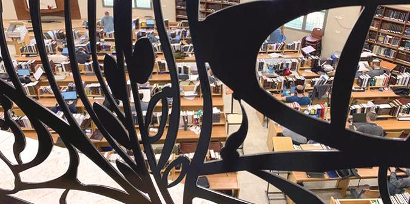
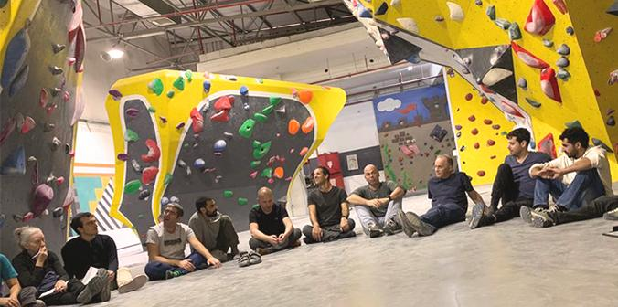

למידה מתרחשת באופנים ספונטניים ויזומים, במרחבים רבים, בגילים שונים, ולמען שלל תכליות. זוהי הפרקטיקה הבסיסית של החיים מחד גיסא, ומאידך גיסא היא קשה להגדרה אחת. בסיור שהובילו ד"ר מרים סמט ומאיה ברק יחד עם העמיתים רועי ליפשיץ, ענת מעוז, איתי וייס ועינת לוי התחקו העמיתים והסגל אחר שאלות עומק על מהות הלמידה: אילו הגדרות יש ללמידה ומהם הקריטריונים שלהן? האם ישנן איכויות שונות של למידה וכיצד אפשר להבחין ביניהן? האם התרחשות למידה מחייבת קיומו של מרחב שבו יש מלמד-לומד? ביקשנו לצאת מההקשר המידי שבו אנו רגילים לזהות למידה ולבחון אותה מחוץ לזירת בית הספר – במוסדות שבהם ישנה הצהרה על קיום למידה כחלק מהותי מהפרקטיקה של המוסד.
הסיור החל ביום עיון מקדים בהרצליה עם ביקור במעבדה באוניברסיטת רייכמן, שבה חוקרים את האפשרות לאמן מוח אנושי בו חלק מיכולות החישה נפגעו ולפתח אותן באמצעות תרגול ממוקד, למשל ללמד עיוורים להפעיל את חלק הראייה במוח על-ידי יצירת תמונה קולית. לאחר מכן נפגשו העמיתים והסגל עם אורנה שיפרון, מרצה באקדמיה הדיאלוגית ואמא מהחינוך הביתי. מפגש זה נע על הציר שבין תרגול למידה שעוצב כתוצאה ממסקנות במחקר המוח לבין למידה כדבר ספונטני המוכתב מעניין ומתשוקה אישית של הלומדים. בה בעת התבהר לנו היטב שללמידת עומק יש תמיד היבט של חזרתיות ואימון, עד לשכלול של הבנה או מיומנות.
הסיור עצמו הוקדש לצפייה במוסדות היררכיים ולשיחה עם העובדים והלומדים בהם: בית סוהר, בית חולים, בית ספר גבוה לאמנויות, ישיבת הסדר ובית ספר לטיסה של חיל האויר. מטרתו הייתה לראות כיצד מתייחסים מוסדות אלו ללמידה ומה אפשר לגזור מהתפיסות שלהם עבור הזירות הבית-ספריות.
 מבט מלמעלה על חבורת הלומדים בישיבת ההסדר
בבית הסוהר הוצגה התפיסה הכורכת את הלימודים העיוניים – אם השלמת בגרויות ואם לימודים אקדמיים – בשיקום המוסרי של האסירים. על הנחה אינטואיטיבית זו הועלו בקרב המשתתפים שאלות רבות, אתיות ואחרות, בייחוד לאחר שיחה בקבוצות קטנות עם אסירי עולם.
בבית החולים סורוקה ובפקולטה לרפואה של אוניברסיטת בן-גוריון בנגב נערכה היכרות, בהובלת תמר שימי, בוגרת מחזור כ"ט של בית הספר, עם אגף הסימולציות בבית הספר לרפואה. המפגש עסק בחשיבות של סימולציה בתהליך ההכשרה של רופאים. בבית החולים חשפו הרופאים עד כמה הם משוועים כיום לתהליך הכשרה אחר, תהליך למידה שיכין אותם למציאות האנושית המורכבת במסדרונות בית החולים –אם במפגשים עם מגזרים מגוונים ותרבויות שונות ואם במפגשים האנושיים – אחד על אחד בסיטואציות מאתגרות רגשית.
בין לבין נערך ביקור בקיר הטיפוס "פרפורמנס רוק" בבאר שבע כדי להתנסות בטיפוס, ואגב כך גם להתבונן בלמידה הכרוכה בכך, על היבטיה הפיזיים והקוגניטיביים. בפעילות הערב בבית הספר "כולנא" ללימודי יצירה מסורתית בירוחם הציגו שניים ממייסדיו, יניב יצחק ויגל הרוש, את התוצאות הייחודיות של הבידוד וההזנחה של עולי צפון אפריקה בפריפריה הגאוגרפית הישראלית – שימורן של מסורות מחשבה, שירה, פיוט, מוזיקה ואמנות של קהילות אזורים אלו. במפגש הם חלקו מעט מעולמות הרוח והאמנות הללו והציגו את האופנים שבהם הם משמרים ומפיצים את נכסי התרבות של קהילות אלו. תלמידיהם מלמדים את הציבור להעריך אוצרות אלה.
בישיבת ההסדר התפתחה שיחה על הווריאציה העכשווית של מסורת לימודי התלמוד בעלת ההיסטוריה הארוכה. בהקשר של ההתמסרות ללמידה עלתה החשיבות של ההתנתקות של הלומדים מן המרחב המוכר להם, מן הבית ומן הקהילה, כדי לשקוע בחוויית עומק אינטלקטואלית.
בטייסת מדריכי הטיסה בחיל האוויר הציג מדריך בכיר את ההכרה ביכולות ההוראה של הטייסים כמרכיב הכרחי בהצלחתם של פרחי הטיס, ובעצם הדגיש את החשיבות של הכשרת מורים וסיפר על הדרך שנדרשה בחיל האוויר כדי להבין שהוראה היא פרופסיה. בסיור הוצגו חדרי הסימולציות המשוכללים של בית הספר לטיסה ונערך דיון על הרלוונטיות של השימוש בכלי סימולציה בתהליך הכשרה להוראה וחינוך.
כשבוע לאחר הסיור נערך מפגש מסכם בבית הקרן ובו התקיימו דיונים בקבוצות אשר הציעו פרספקטיבות שונות: על המשמעויות החברתיות של למידה מאורגנת עבור קבוצות אוכלסייה שונות; על החשיבות של הכשרה לעוסקים בהוראה; על המוטיבציות ללמידה משמעותית ועל התנאים שיכולים לאפשר אותה.
במפגש הסיכום עובדו המחשבות והתובנות בשלוש קבוצות בהתאם לשלוש תמות: הוראה ולמידה בבתי ספר, הכשרת מורים ולמידה ארגונית. היחידה הלימודית הסתיימה בהרצאה על המתח בין שתי המגמות המרכזיות להתייחסות לפשע ופשיעה בחברה המודרנית, בין ענישת פושעים ובין שיקומם. מהלך הסיור כולו העשיר את העמיתים והסגל בשפע התרשמויות ומפגשים עם מקומות ואנשים חדשים, אשר הצליח לייצר שיחה מעמיקה על למידה, תוך כדי התבוננות במהלך עצמו כתהליך למידה אישי.
 העמיתים במתחם הטיפוס "פרפורמנס רוק" בבאר שבע
{kind=link}
{kind=link}